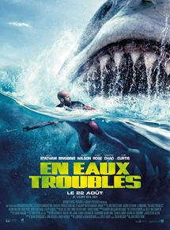
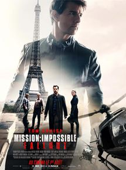
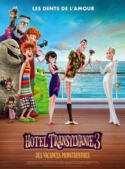
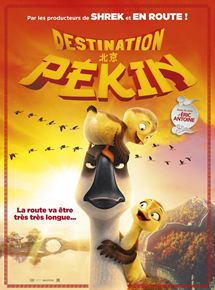
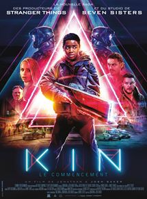
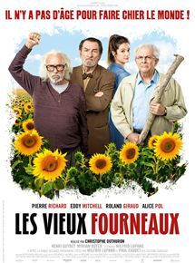

| Titre | Affiche | Réalisateur | Genre (groupé) | Date de sortie | Votre note |
| En eaux troubles |  | Jon Turteltaub | Thriller, Action | 22.08.2018 | **** |
| Mission impossible : Fallout |  | Christopher McQuarrie | Action, Espionnage | 01.08.2018 | *** |
| Hôtel transylvanie 3 : Des vacances monstrueuses |  | Genndy Tartakovsky | Animation, Comédie | 25.07.2018 | ** |
| Destination Pékin ! |  | Christopher Jenkins | Animation, Aventure, Comédie | 15.08.2018 | ** |
| Kin : Le commencement |  | Josh Baker, Jonathan Baker (XVII) | 29.08.2018 | *** | |
| Les vieux fourneaux |  | Christophe Duthuron | Comédie | 22.08.2018 | **** |